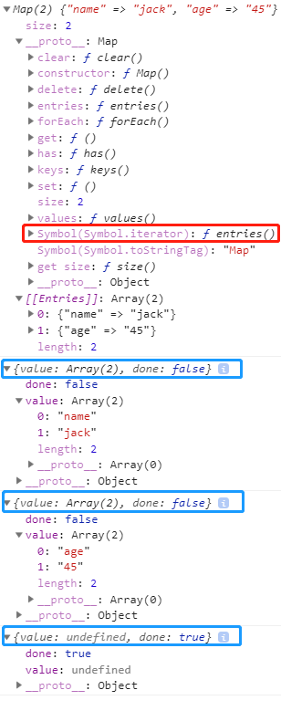

ES6系列-3-Iterator
遍历器（Iterator）是带有特殊接口的对象。含有一个next()方法，调用返回一个包含两个属性的对象，分别是value和done，value表示当前位置的值，done表示是否迭代完，当为true的时候，调用next就无效了。它可以为各种不同的数据结构提供统一的访问机制。任何数据结构只要部署 Iterator 接口，就可以完成遍历操作。
概述
JavaScript 原有的表示“集合”的数据结构，主要是数组（Array）和对象（Object），ES6 又添加了Map和Set。这样就有了四种数据集合，用户还可以组合使用它们，定义自己的数据结构，比如数组的成员是Map，Map的成员是对象。这样就需要一种统一的接口机制，来处理所有不同的数据结构。
ES5中遍历集合通常都是 for循环，数组还有 forEach 方法，对象就是 for-in，ES6 中又添加了 Map 和 Set，而遍历器（Iterator）可以统一处理所有集合数据的方法。
作用
- 为各种数据结构，提供一个统一的、简便的访问接口；
- 使得数据结构的成员能够按某种次序排列；
- ES6 创造了一种新的遍历命令for…of循环，Iterator 接口主要供for…of消费；
Iterator 的遍历过程
创建一个指针对象，指向当前数据结构的起始位置。也就是说，遍历器对象本质上，就是一个指针对象。
第一次调用指针对象的next方法，可以将指针指向数据结构的第一个成员。
第二次调用指针对象的next方法，指针就指向数据结构的第二个成员。
不断调用指针对象的next方法，直到它指向数据结构的结束位置。
下面是一个模拟next方法返回值的例子。
var it = makeIterator(['a', 'b']);
it.next() // { value: "a", done: false }
it.next() // { value: "b", done: false }
it.next() // { value: undefined, done: true }
function makeIterator(array) {
var nextIndex = 0;
return {
next: function() {
return nextIndex < array.length ?
{value: array[nextIndex++], done: false} :
{value: undefined, done: true};
}
};
}
默认 iterator 接口
一种数据结构只要部署了 Iterator 接口，我们就称这种数据结构是“可遍历的”（iterable）。ES6 规定，默认的 Iterator 接口部署在数据结构的Symbol.iterator属性，或者说，一个数据结构只要具有Symbol.iterator属性，就可以认为是“可遍历的”（iterable）。Symbol.iterator属性本身是一个函数，就是当前数据结构默认的遍历器生成函数。执行这个函数，就会返回一个遍历器。
原生具备 Iterator 接口的数据结构如下：
Array
Map
Set
String
TypedArray
函数的 arguments 对象
NodeList 对象
下面的例子是Map结构的Symbol.iterator属性:
const map=new Map([
['name','jack'],
['age','45']
])
let iter = map[Symbol.iterator]();
//Symbol.iterator是一个表达式，返回Symbol对象的iterator属性，
//这是一个预定义好的、类型为 Symbol 的特殊值，所以要放在方括号内
console.log(map)
console.log(iter.next())
console.log(iter.next())
console.log(iter.next())

对于原生部署 Iterator 接口的数据结构，不用自己写遍历器生成函数，for…of循环会自动遍历它们。
for(let key of map){
console.log(key)
}
//["name", "jack"]
//["age", "45"]
对于没有原生部署 Iterator 接口的数据结构（主要是对象），都需要自己在Symbol.iterator属性上面部署，这样才会被for…of循环遍历。
对象（Object）之所以没有默认部署 Iterator 接口，是因为对象的哪个属性先遍历，哪个属性后遍历是不确定的，需要开发者手动指定。本质上，遍历器是一种线性处理，对于任何非线性的数据结构，部署遍历器接口，就等于部署一种线性转换。
下面是另一个为对象添加 Iterator 接口的例子。
let obj1 = {name:"1",age:2};
let obj2 = {
data: [ 'hello', 'world' ],
[Symbol.iterator]() {
const self = this;
let index = 0;
return {
next() {
if (index < self.data.length) {
return {
value: self.data[index++],
done: false
};
} else {
return { value: undefined, done: true };
}
}
};
}
};
for(let key of obj2){
console.log(key)；
// hello
// world
}
for(let key of obj1){
console.log(key);// 报错 Uncaught TypeError: obj1 is not iterable
}
调用 Iterator 接口的场合
除了for...of循环外，还有一些场合会默认调用 Iterator 接口（即Symbol.iterator方法）：
解构赋值
对数组和 Set 结构进行解构赋值时，会默认调用Symbol.iterator方法。let set = new Set().add('a').add('b').add('c'); let [x,y] = set; // x='a'; y='b' let [first, ...rest] = set; // first='a'; rest=['b','c'];扩展运算符
扩展运算符（…）也会调用默认的 Iterator 接口。// 例一 var str = 'hello'; [...str] // ['h','e','l','l','o'] // 例二 let arr = ['b', 'c']; ['a', ...arr, 'd'] // ['a', 'b', 'c', 'd']只要某个数据结构部署了 Iterator 接口，就可以对它使用扩展运算符，将其转为数组。
let arr = [...iterable];yield*
yield*后面跟的是一个可遍历的结构，它会调用该结构的遍历器接口let generator = function* () { yield 1; yield* [2,3,4]; yield 5; }; var iterator = generator(); iterator.next() // { value: 1, done: false } // 如果yield后面没有带*号，那么直接会输出 { value:[2,3,4], done: false } iterator.next() // { value: 2, done: false } iterator.next() // { value: 3, done: false } iterator.next() // { value: 4, done: false } iterator.next() // { value: 5, done: false } iterator.next() // { value: undefined, done: true }其他场合
由于数组的遍历会调用遍历器接口，所以任何接受数组作为参数的场合，其实都调用了遍历器接口。下面是一些例子。for...of Array.from() Map(), Set(), WeakMap(), WeakSet()（比如new Map([['a',1],['b',2]])） Promise.all() Promise.race()
字符串的 Iterator 接口
字符串是一个类似数组的对象，也原生具有 Iterator 接口。
var someString = "hi";
console.log(typeof someString[Symbol.iterator])
// "function"
var iterator = someString[Symbol.iterator]();
iterator.next() // { value: "h", done: false }
iterator.next() // { value: "i", done: false }
iterator.next() // { value: undefined, done: true }
Iterator 接口与 Generator 函数
Symbol.iterator方法的最简单实现，还是使用 Generator 函数。Symbol.iterator方法几乎不用部署任何代码，只要用 yield 命令给出每一步的返回值即可。
let obj = {
* [Symbol.iterator]() {
yield 'hello';
yield 'world';
}
};
for (let x of obj) {
console.log(x);
}
// "hello"
// "world"
for…of 循环
ES6 借鉴 C++、Java、C# 和 Python 语言，引入了for…of循环，作为遍历所有数据结构的统一的方法。
for…of循环可以使用的范围包括数组、Set 和 Map 结构、某些类似数组的对象（比如arguments对象、DOM NodeList 对象）、后文的 Generator 对象，以及字符串。
//数组结构
const arr = ['red', 'green', 'blue'];
for(let key of arr) {
console.log(key); // red green blue
}
//set结构
var engines = new Set(["Gecko", "Trident", "Webkit", "Webkit"]);
for (let key of engines) {
console.log(key);
}
//Map结构
let map = new Map().set('a', 1).set('b', 2);
for (let key of map) {
console.log(key);
}
//计算生成的数据结构
//ES6 的数组、Set、Map 都部署了以下三个方法，调用后都返回遍历器对象。
//entries() keys() values() 返回的都是一个遍历器对象
let marr = ['a', 'b', 'c'];
for (let key of marr.entries()) {
console.log(key);
}
// 字符串
let str = "hello";
for (let key of str) {
console.log(key); // h e l l o
}
// DOM NodeList对象
let paras = document.querySelectorAll("li");
for (let key of paras) {
key.classList.add("test")
}
//对应li节点上会添加 class="test"
// arguments对象
function printArgs() {
for (let key of arguments) {
console.log(key);
}
}
printArgs('a', 'b');
// 'a'
// 'b'
对象上如何使用for...of循环？对于普通的对象，for…of结构不能直接使用，会报错，必须部署了 Iterator 接口后才能使用。
方法1： 使用 Object.keys
let es6 = {
edition: 6,
committee: "TC39",
standard: "ECMA-262"
};
//for in 是可以直接使用的
for (let e in es6) {
console.log(e);
// edition
// committee
// standard
}
for (var key of Object.keys(es6)) {
console.log(key + ': ' + es6[key]);
//edition: 6
//committee: TC39
//standard: ECMA-262
}
方法2：使用 Generator 函数将对象重新包装一下
function* entries(obj) {
for (let key of Object.keys(obj)) {
yield [key, obj[key]];
}
}
for (let [key, value] of entries(es6)) {
console.log(key, '->', value);
}
//edition -> 6
//committee -> TC39
//standard -> ECMA-262
for of 与其他遍历语法的比较
以数组为例:
- for循环: 写法较为麻烦
- 数组内置的forEach方法：无法中途跳出forEach循环，break命令或return命令都不能奏效
- for…in循环：主要是为遍历对象而设计的，不适用于遍历数组，数组中是以字符串作为键名“0”、“1”、“2”等等。